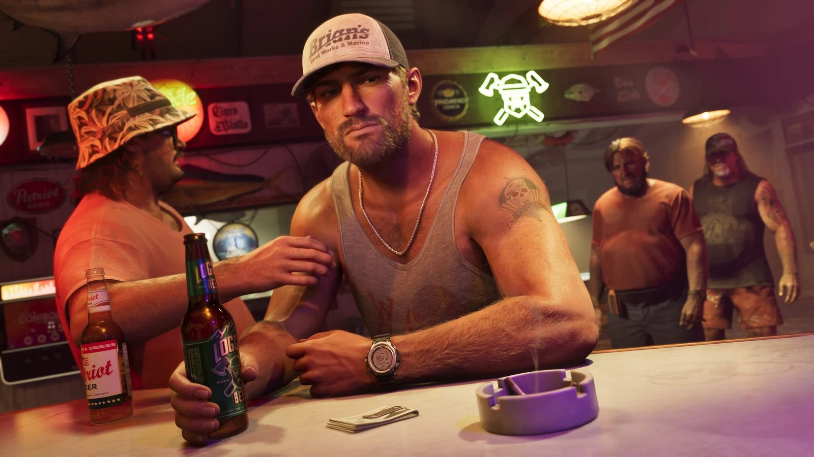

GTA 6 kaise khele — pehle kya karein?

Pehle ye karein, isi tartib mein
- Chapter 1 ki story aage barhayein. Zyada tar systems adhe Chapter 1 tak band rehte hain — us se pehle na chori ki gaari bech sakte hain, na fast travel, na zyada tar side activities. Story hi poori game ki chabi hai. (Reported)
- Fazool cash Jason ke bedroom mein floorboards ke neeche chhupayein. Stash kiya hua cash wasted hone par bhi bacha rehta hai; wallet wala nahi bacha. (Reported)
- Jason ke pet snake ko roz aik dafa khana dein — chhota sa muft +3% Focus boost. (Reported)
- Court se guzrein to hoops khelein — har basket par +2%, paanch baskets tak. (Reported)
- Jitni jaldi ho sakay Ammu-Nation se suppressor le lein — khamoshi wale stick-ups aur stealth hisse bohat asan ho jate hain. (Reported)
- Garage mile to le lein — Chapter 2 mein asal paise wale tareeqe khulne par bechne wali gaariyan rakhne ki jagah chahiye hogi. (Reported)
Key Lento ke aas paas asan side kaam
Game ki shuruaat Key Lento se hoti hai. Jab story saans lene de, to guides ke mutabiq aas paas ye halki phulki activities hain (sab Reported): Kenton ke sath treasure diving, Cal ke sath fishing, Shirley ki requests, Robbery Opportunities (map par gold icons dekhein), aur Donnie aur Brian ke liye contraband chalana.
Chapter 1 ka jaal — grind se pehle parh lein
Ye wo baat hai jo zyada tar naye players mushkil tareeqe se seekhte hain: Chapter 1 ke akhir mein story Jason ka safe house le leti hai — aur kai guides (Game8 aur PowerPyx is par mutafiq hain) ke mutabiq is ke sath ye sab bhi jata hai:
- Chala jata hai: wallet ke tamam paise, poora floorboard stash, aur Jason ki fitness gains (reset ho jati hain).
- Bacha rehta hai: Buck Me! Family Savings mein dale hue paise ($5,000 tak), Lucia ke sath relationship level, aur unique weapons.
To Chapter 1 mein aqalmandi ye hai: story khelein, fazool cash jama karne ke bajaye Family Savings mein dalein, aur paise ki grind Chapter 2 ke liye chhor dein — tafseel ke liye hamara GTA 6 mein paise kamane ka guide dekhein. Apne pehle bare session se pehle best settings aur naye controls (sprint ab L3 par hai) bhi dekh lein, aur save karne ka tareeqa shuru mein hi seekh lein, kyunke autosave aap ki free-roam progress nahi bachata.
Ghar ki marammat aur Lucia ke chhote kaam karne chahiyein ya nahi? Hamara chores aur life-sim guide batata hai ke un se kya milta hai — aur chhorne par kya nuqsan hota hai.
FAQ
GTA 6 mein sab se pehle kya karna chahiye?
Chapter 1 ki story missions pehle karein. Game ke zyada tar systems adhe Chapter 1 tak band rehte hain — na chori ki gaari bech sakte hain, na fast travel, na zyada tar side activities. (Reported)
Kya Chapter 1 ke akhir mein paise chale jate hain?
Ji haan, kai player guides ke mutabiq: Chapter 1 ke akhir mein safe house, wallet ke tamam paise aur floorboard wala stash chala jata hai, aur Jason ki fitness reset ho jati hai. Sirf Buck Me! Family Savings ($5,000 tak), Lucia ke sath relationship level aur unique weapons bachay rehte hain. (Reported)
GTA 6 mein paise kahan chhupayein?
Fazool cash Jason ke bedroom mein floorboards ke neeche chhupayein — stash kiya hua cash wasted hone par bhi bacha rehta hai, wallet wala nahi. Aur Chapter 1 mein hoard karne ke bajaye Family Savings mein dalein. (Reported)
Sources: is page ke facts hamare English guide "What to Do First" se liye gaye hain, jo launch-day player guides (Game8, PowerPyx sameet) par mabni hai. Checked 23 November 2026. Labels: Confirmed = officially stated or multiply verified; Reported = claimed by sources, not yet officially confirmed; Not announced = no reliable information yet.